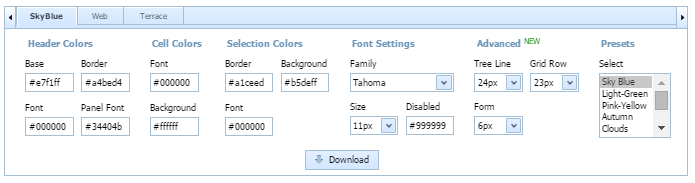

The latest version of Skin Builder is the improved online tool for creating the unique appearance of your app.

You can create your own skin by modifying any existing one.
There are several steps you need to complete:
1) First of all, choose the base skin: SkyBlue, Web or Terrace.
2) Then you can either select one of the available preset color schemes from the list or create your own one.
For creating your own color scheme you can adjust color/font settings, and the preview will be reloaded with the new settings automatically.
Here's the list of skin settings:
Since the version 4.1, the Advanced block of settings has appeared. It includes:
3) Once your skin is ready, you can apply it to your app.
For this purpose, do the following:
It's possible to load a ready custom skin created in versions 3.x and 4.x into Skin Builder to fill the form with data from the uploaded dhtmlx.css. Once the file is uploaded, you'll be able to continue working with the data (colors and fonts) you've entered earlier.
To upload your custom dhtmlx.css, click the "Load your CSS" button and choose the necessary dhtmlx.css file.
After you've made the necessary changes, you can download a zip file with the updated skin by clicking the "Download" button.
You can quickly modify your skin, if needed. There's a readme.txt file inside of dhtmlx.zip generated by Skin Builder. Here you can find the link which will load you skin data into the form.
Back to top